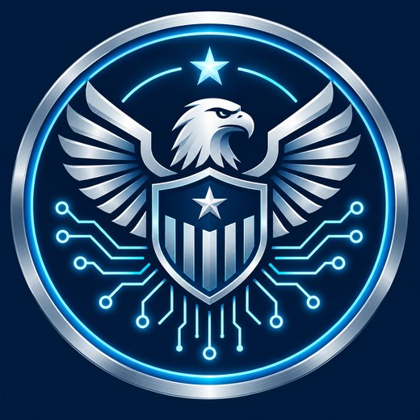
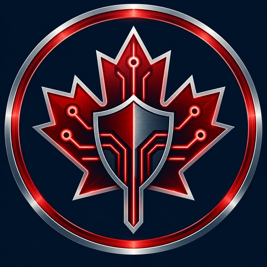

Two nations, one skillset
CyberPatriot and CyberTitan are the flagship youth cyber defense programs of the United States and Canada. This academy teaches the technical and strategic skills both competitions reward.

Air & Space Forces Association

ICTC · Canada
At a glance
| Founded (CyberPatriot) | 2009 |
| Teams (CyberPatriot) | 4,000–5,000 / season |
| Team size | 2–6 competitors |
| Round length | ~4 hours online |
| Core images | Windows, Linux, Cisco |
| CyberTitan season | October – May |
CyberPatriot
What it is
CyberPatriot is the National Youth Cyber Education Program created by the Air & Space Forces Association (AFA). Its centerpiece is the National Youth Cyber Defense Competition — the largest youth cyber defense competition in the United States.
It began in 2009 as a proof-of-concept with eight Air Force JROTC and Civil Air Patrol teams. Today it draws thousands of teams from all 50 states and several international locations. The virtual machines and scoring engine are built with the Center for Infrastructure Assurance and Security (CIAS) at the University of Texas at San Antonio.
Divisions
- Open Division — any high school team.
- All Service Division — JROTC, Civil Air Patrol, and Naval Sea Cadet Corps teams.
- Middle School Division — middle and junior high teams.
Teams compete within their division and state, with the strongest advancing to national rounds.
The competition season
Practice Round
Exhibition round to learn the interface with no pressure.
Training Round
Second practice round with more depth.
Qualifier Rounds
Scored rounds that determine advancement.
State Round
Teams compete within their state.
Semifinals
Top teams nationally compete online.
National Finals
In-person finals for the top teams.
The images you defend
Each round hands you virtual machines running real operating systems. You harden them against a scenario, guided by a README.
| Category | Examples |
|---|---|
| Windows client | Windows 10, Windows 11 |
| Windows server | Server 2019, Server 2022 |
| Linux | Ubuntu 22.04, Linux Mint 21, Debian 12 |
| BSD | FreeBSD |
| Networking | Cisco switches & routers (Packet Tracer) |
CyberTitan
What it is
CyberTitan is Canada’s largest youth cyber defence competition, run by the Information and Communications Technology Council (ICTC). It gives middle and secondary school students hands-on experience in simulated cyber threat environments.
CyberTitan is a sister program to CyberPatriot: Canadian teams train on the same style of hardening challenges, and many compete inside CyberPatriot’s structure as well. Its partners include the Communications Security Establishment (CSE), so scenarios reflect real Canadian threat landscapes.
Season & format
- Season: October to February.
- National finale: May.
- Registration: open April to October.
- Teams: up to five teams per school, each of two to six players.
- Challenges: hardening images in simulated environments, plus online rounds.
How the two compare
The technical content — the part you actually practise — overlaps almost completely.
| Feature | CyberPatriot | CyberTitan |
|---|---|---|
| Run by | Air & Space Forces Association (US) | ICTC (Canada) |
| Audience | US high school & middle school, JROTC/CAP | Canadian middle & secondary school |
| Season | October – March | October – May |
| Team size | 2–6 (5 compete at once) | 2–6 per team, up to 5 teams/school |
| Core challenge | Windows + Linux images, Cisco | Hardening images in simulated environments |
| Rounds | Practice, Training, Qualifiers, State, Semis, Finals | Online rounds + national finale |
| Skills taught | Identical: identity & access, hardening, investigation, networking | |
Skills that lead to careers
Competition work is real system administration. The tasks map directly onto entry-level IT and security roles.
🔐 Identity
Accounts, groups, least privilege, password policy — the foundation of every SOC role.
🛡️ Hardening
Firewalls, patching, disabling insecure services — the daily work of a sysadmin.
🔎 Investigation
Forensics, log reading, malware hunting — the core of incident response.
🌐 Networking
Cisco IOS, VLANs, ACLs — the language of infrastructure.
Ready to start training?
Begin with the Foundations track, then work through Windows, Linux and Cisco. Finish with forensics and strategy to tie it together.
26 modules
Across five tracks
171 slides
In-depth, exam-ready
130 questions
Instant feedback
Printables
Round checklists
Cyber Defense Academy is an independent, open educational resource. It is not affiliated with, endorsed by, or sponsored by the Air & Space Forces Association, CyberPatriot, ICTC, or CyberTitan. Program details are summarized for learning and may change — always confirm current rules and dates with the official organizers.